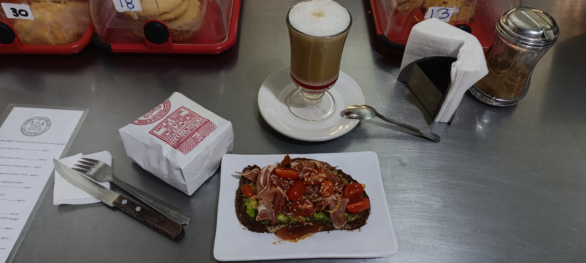
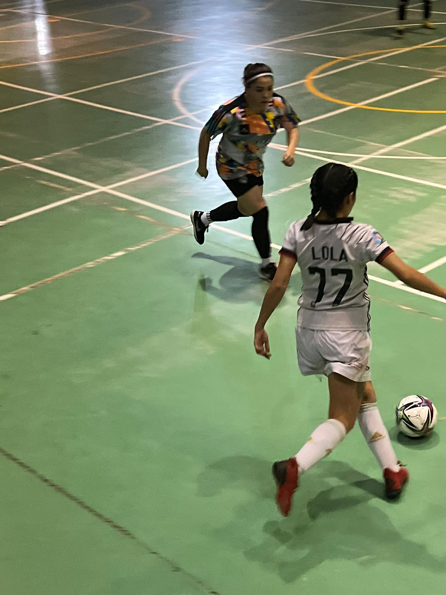

Mi nombre es Adriana Medrano, y estoy muy emocionada por la posibilidad de seguir estudiando con DEV.F para seguir avanzando en mi carrera. A lo largo de los años, he cultivado una gran pasión por el aprendizaje, y creo que este máster es la oportunidad perfecta para perfeccionar mis habilidades y llevar mi carrera al siguiente nivel.
Actualmente curso la carrera de ING en matematicas en la Superior de Física y Matematicas del IPN, y trabajo en Cortinas Innova Cort: una empresa dedicada a la fabricación, instalación y mantenimiento de cortinas metalicas
Me gusta jugar futbol, caminar y andar en bici, conocer cafeterías y tomar fotografías
 A lo largo de mi vida laboral, he adquirido y perfeccionado una serie de habilidades clave. Algunas de mis competencias más destacadas son:
Este máster representa para mí una oportunidad única de adquirir un conocimiento más profundo y especializado en las tecnologías que me apasionan. Mis motivos para aplicar son:
Si deseas conocer más sobre mi, sientete en la confianza de escribirme. No dudes en contactarme a través de mis redes sociales o enviarme un mensaje a través del formulario.
Conéctate conmigo: